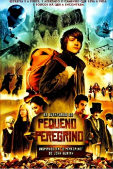

As Aventuras do Pequeno Peregrino (2010)

Time to believe.

Avaliação (TMDb):


2.5/10 (9 votos)
Avaliação (Usuário):
Outro Título:The Wylds
País:United States, 105 minutos
Idiomas falados:Inglês, Português
Gênero(s):Ação, Drama, Aventura, Fantasia
Diretor(s):Andrew Wiest
Codec:MPEG-2 (DVD)
Número: 3506
Sinopse:
Chris é um menino sem rumo, que vive com um grupo de ladrões e precisa roubar para sobreviver. Quando um homem lhe diz que seu pai está vivo, ele deve decidir entre continuar no mundo da marginalidade ou lutar para encontrar sua família.
Elenco:
Solomon Ray, Robert Milo Andrus, Robert Bear, Larry Laverty, Judah Justine
Tipo de mídia: DVD5,
Legendas: Inglês, Português
Alugado: Não
Tela: Anamorphic Widescreen